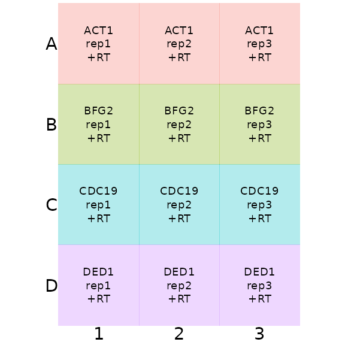
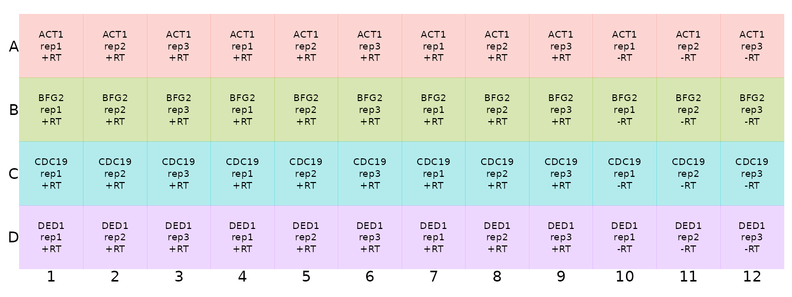
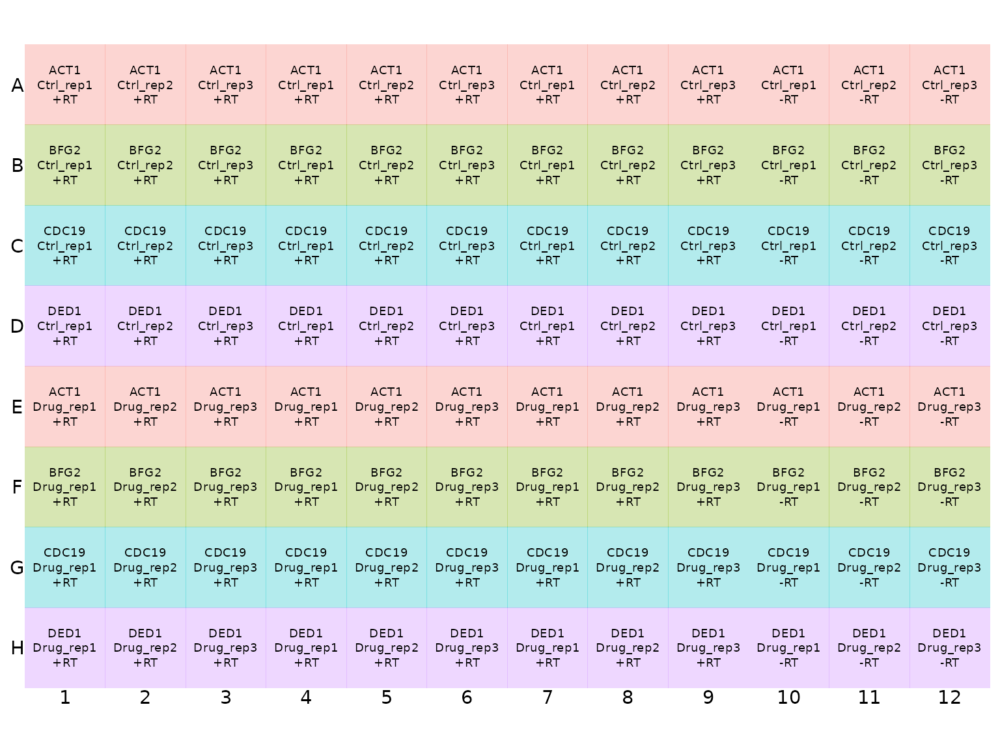

vignettes/platesetup_vignette.Rmd
platesetup_vignette.RmdThis vignette introduces how to set up microwell plates for tidyqpcr analysis. Start here if you are new-ish to the tidyverse or want to see explanations about how to design experiments and plate layouts. For worked examples of tidyqpcr analysis with 384-well plates, see:
vignette("calibration_vignette", package = "tidyqpcr")
vignette("multifactor_vignette", package = "tidyqpcr")
Setting up plates is partly a technical question of how to use functions in tidyqpcr and the tidyverse, but more fundamentally a question about how to design your experiment. We recommend the community-led best-practice MIQE guidelines: how many replicates do you need, and what information do you need to provide to accompany your analysis?
We suggest thinking through the whole experiment first, including what you will measure, how many replicates, and what figures you will want to make. If you plan all the analysis before even starting to grow your biological samples and extract RNA/DNA, then it is easier to avoid mistakes. Also, the steps from cell growth, through nucleic acid extraction and measurement, to finished figures, go much quicker.
This vignette builds from a 12-well “practice plate” up to a 96 well plate for a plausible small RT-qPCR experiment. The goal is that after working through this vignette, the plate setup in the Multifactorial vignette will be easier to follow.
This vignette focuses on one primer set per well (for SYBR data), and doesn’t discuss more than one probe per well (for TaqMan data). Please create an issue on the github if your data needs aren’t covered here, and we will try to respond to it.
Each well of your plate measures one or more sequence targets in one DNA/RNA sample. Each sample may be duplicated with different types of preparation (e.g. no reverse transcriptase enzyme controls). The minimal information you need to describe your plate is to specify the target(s), sample, and preparation type for every well.
So, tidyqpcr expects that your plate plan has at a minimum three pieces of information per well: target_id, sample_id, and prep_type.
target_id should uniquely identify a primer set or primer set/probe combination that you detect in a well. If you are detecting multiple regions of the same gene, or trialing multiple probes or primer sets, you have to give them different target_id names. We chose to name this variable “target_id” to make it clear that this could refer to a primer set, or a primer set/ probe combination, detecting a single target sequence. Note again that the current (June 2020) version of tidyqpcr has been tested on SYBR/intercalating dye data with one primer set per well only.
sample_id should uniquely identify a nucleic acid sample in your experiment. sample_id can either describe all the relevant information, for example HeatShock_10min_RepA, InputControl_WildType_Rep3; or provide other unique identifying information, for example S013. Functions including display_plate and calculate_deltacq_bysampleid assume that there is a column called sample_id, and use it to decide which wells get analysed together. We discuss below how to add other kinds of information/metadata to help your analysis.
prep_type is used for different types of nucleic acid preps from the same sample. Negative controls are crucial, either no template (NT) controls, or specifically for RNA-measuring RT-qPCR, the no-reverse transcriptase control that detects DNA contamination, as discussed in the MIQE guidelines. So for RT-qPCR experiments we expect to have prep_types +RT and -RT for each sample, and for primer calibration we would always have a no template control.
Technical replicates are also necessary for qPCR experiments to track the variability. This occurs as multiple wells, each of which has the same combination of target_id, sample_id, and prep_type.
Technically, tidyqpcr can cope with any combination of target and sample in any well. As long as the information is associated clearly, later analysis will work fine. However, good systematic designs that are interpretable both by people (you) and by the computer are less error prone.
One systematic approach is to have each row measure exactly one target and each column one sample. Or vice versa: one row per sample, one column per target. This has the advantage of being straightforward to load with a multichannel pipette.
tidyqpcr is setup to make it easy to specify column contents with a colkey, and row contents with a rowkey, then to combine these into a plan for an entire plate or for a sub-region of a plate.
Let’s imagine we are performing a RT-qPCR experiment measuring:
We need 4 * 3 * 4 = 48 wells for this experiment. Let’s put this information into 48 wells of a 96-well plate.
Here we use the function tibble to make the rowkey data tibble, and the function rep to repeat the target_id information enough times to fill the plate. These functions are imported into tidyqpcr; access their help files directly by ?tibble and ?rep from your R session.
We use the built-in constant LETTERS to label the well row (well_row) with letters A through D, like they are labeled on a standard 96-well plate.
target_id_levels <- c("ACT1", "BFG2", "CDC19", "DED1")
rowkey4 <- tibble(
well_row = LETTERS[1:4],
target_id = target_id_levels
)
print(rowkey4)## # A tibble: 4 x 2
## well_row target_id
## <chr> <chr>
## 1 A ACT1
## 2 B BFG2
## 3 C CDC19
## 4 D DED1Similarly, we put the sample information in a tibble for the columns, including well_col for the column name
sample_id_levels <- c("rep1", "rep2", "rep3")
prep_type_levels <- "+RT"
colkey3 <- tibble(
well_col = 1:3,
sample_id = sample_id_levels,
prep_type = prep_type_levels
)
print(colkey3)## # A tibble: 3 x 3
## well_col sample_id prep_type
## <int> <chr> <chr>
## 1 1 rep1 +RT
## 2 2 rep2 +RT
## 3 3 rep3 +RTTo hold the information about a blank plate, with information on both the row and column for each well, tidyqpcr has the function create_blank_plate:
create_blank_plate(well_row = LETTERS[1:4], well_col = 1:3)## # A tibble: 12 x 3
## well well_row well_col
## <chr> <fct> <fct>
## 1 A1 A 1
## 2 A2 A 2
## 3 A3 A 3
## 4 B1 B 1
## 5 B2 B 2
## 6 B3 B 3
## 7 C1 C 1
## 8 C2 C 2
## 9 C3 C 3
## 10 D1 D 1
## 11 D2 D 2
## 12 D3 D 3Access help for this also at ?create_blank_plate. Note that there are default functions to make 96-well, 384-well, and 1536-well blank plates, or as above you can customise it.
Now we create our 12-well mini-plate, using the label_plate_rowcol function to combine information from the blank plate template, the rowkey, and the column key.
plate_plan12 <- label_plate_rowcol(
plate = create_blank_plate(well_row = LETTERS[1:4], well_col = 1:3),
rowkey = rowkey4,
colkey = colkey3
)
print(plate_plan12)## # A tibble: 12 x 6
## well well_row well_col sample_id prep_type target_id
## <chr> <fct> <fct> <chr> <chr> <chr>
## 1 A1 A 1 rep1 +RT ACT1
## 2 A2 A 2 rep2 +RT ACT1
## 3 A3 A 3 rep3 +RT ACT1
## 4 B1 B 1 rep1 +RT BFG2
## 5 B2 B 2 rep2 +RT BFG2
## 6 B3 B 3 rep3 +RT BFG2
## 7 C1 C 1 rep1 +RT CDC19
## 8 C2 C 2 rep2 +RT CDC19
## 9 C3 C 3 rep3 +RT CDC19
## 10 D1 D 1 rep1 +RT DED1
## 11 D2 D 2 rep2 +RT DED1
## 12 D3 D 3 rep3 +RT DED1We visualise this plate plan using the display_plate function:
display_plate(plate_plan12)
Expanding this practice plan to incorporate replicates can be done by taking this little square and making copies across a larger plate. This strategy of making copies of a small square makes it easier to use multichannel pipettes to speed up plate loading. It also means that technical replicates of the same sample are not in adjacent wells on the plate, correcting for some location-specific artefacts of amplification in the qPCR machine. However, if there are row- or column-specific artefacts, this approach does not allow you detect them separately.
Here we are putting three replicates of +RT and one of -RT for each sample. This approach is reliable if DNA contamination from -RT samples would show up in multiple sample/target combinations.
We could achieve these replicates in the plate plan by explicitly writing out every time as in c("+RT", "+RT", "+RT", "-RT"), or we can again use the rep function. Below, we use rep("+RT", times = 9) to make 9 repeats, meaning that the 3 tech reps of +RT samples are next to each other. We use the concatenate function c, to arrange that next to the single replicates of the -RT samples.
sample_id_levels <- c("rep1", "rep2", "rep3")
prep_type_vector <- c(rep("+RT", times = 9), rep("-RT", times = 3))
print(prep_type_vector)## [1] "+RT" "+RT" "+RT" "+RT" "+RT" "+RT" "+RT" "+RT" "+RT" "-RT" "-RT" "-RT"
colkey12 <- tibble(
well_col = 1:12,
sample_id = rep(sample_id_levels, times = 4),
prep_type = prep_type_vector
)
print(colkey12)## # A tibble: 12 x 3
## well_col sample_id prep_type
## <int> <chr> <chr>
## 1 1 rep1 +RT
## 2 2 rep2 +RT
## 3 3 rep3 +RT
## 4 4 rep1 +RT
## 5 5 rep2 +RT
## 6 6 rep3 +RT
## 7 7 rep1 +RT
## 8 8 rep2 +RT
## 9 9 rep3 +RT
## 10 10 rep1 -RT
## 11 11 rep2 -RT
## 12 12 rep3 -RT
plate_plan48 <- label_plate_rowcol(
plate = create_blank_plate(well_row = LETTERS[1:4], well_col = 1:12),
rowkey = rowkey4,
colkey = colkey12
)
print(plate_plan48)## # A tibble: 48 x 6
## well well_row well_col sample_id prep_type target_id
## <chr> <fct> <fct> <chr> <chr> <chr>
## 1 A1 A 1 rep1 +RT ACT1
## 2 A2 A 2 rep2 +RT ACT1
## 3 A3 A 3 rep3 +RT ACT1
## 4 A4 A 4 rep1 +RT ACT1
## 5 A5 A 5 rep2 +RT ACT1
## 6 A6 A 6 rep3 +RT ACT1
## 7 A7 A 7 rep1 +RT ACT1
## 8 A8 A 8 rep2 +RT ACT1
## 9 A9 A 9 rep3 +RT ACT1
## 10 A10 A 10 rep1 -RT ACT1
## # … with 38 more rowsWe again visualise this plate plan using the display_plate function
display_plate(plate_plan48)
What if we want to measure more than one condition, beyond replicates? For example, a control treatment compared to a drug treatment, or a change in nutrient conditions? We can achieve this again by extending the “repeating block” approach to include the second condition.
In our example, let us do this explicitly. For the rowkey we can use the rep function to measure each target in conditions Ctrl and Drug, repeating each 4 times.
condition_levels <- c("Ctrl", "Drug")
condition_values <- rep(condition_levels, each = 4)
print(condition_values)## [1] "Ctrl" "Ctrl" "Ctrl" "Ctrl" "Drug" "Drug" "Drug" "Drug"We also use the function rep to repeat the target_id information 4 times, to fill the plate. Again, ask for help using ?rep.
target_id_levels <- c("ACT1", "BFG2", "CDC19", "DED1")
target_id_levels_rep <- rep(target_id_levels, times = 2)
print(target_id_levels_rep)## [1] "ACT1" "BFG2" "CDC19" "DED1" "ACT1" "BFG2" "CDC19" "DED1"Now combine this into a rowkey:
rowkey8 <- tibble(
well_row = LETTERS[1:8],
target_id = target_id_levels_rep,
condition = condition_values
)
print(rowkey8)## # A tibble: 8 x 3
## well_row target_id condition
## <chr> <chr> <chr>
## 1 A ACT1 Ctrl
## 2 B BFG2 Ctrl
## 3 C CDC19 Ctrl
## 4 D DED1 Ctrl
## 5 E ACT1 Drug
## 6 F BFG2 Drug
## 7 G CDC19 Drug
## 8 H DED1 DrugTo make this into a plate, we also need a column key. What’s changed is that, each sample needs to refer both to a condition and to a biological replicate. If we kept colkey12 from above, then the variable sample_id would no longer point uniquely to a single sample.
biol_rep_levels <- c("rep1", "rep2", "rep3")
colkey12_twocondition <- tibble(
well_col = 1:12,
biol_rep = rep(biol_rep_levels, times = 4),
prep_type = prep_type_vector
)
print(colkey12_twocondition)## # A tibble: 12 x 3
## well_col biol_rep prep_type
## <int> <chr> <chr>
## 1 1 rep1 +RT
## 2 2 rep2 +RT
## 3 3 rep3 +RT
## 4 4 rep1 +RT
## 5 5 rep2 +RT
## 6 6 rep3 +RT
## 7 7 rep1 +RT
## 8 8 rep2 +RT
## 9 9 rep3 +RT
## 10 10 rep1 -RT
## 11 11 rep2 -RT
## 12 12 rep3 -RTNow we put this together into a plan for the whole 96-well plate:
plate_plan96_take1 <- label_plate_rowcol(
plate = create_blank_plate(well_row = LETTERS[1:8], well_col = 1:12),
rowkey = rowkey8,
colkey = colkey12_twocondition
)
print(plate_plan96_take1)## # A tibble: 96 x 7
## well well_row well_col biol_rep prep_type target_id condition
## <chr> <fct> <fct> <chr> <chr> <chr> <chr>
## 1 A1 A 1 rep1 +RT ACT1 Ctrl
## 2 A2 A 2 rep2 +RT ACT1 Ctrl
## 3 A3 A 3 rep3 +RT ACT1 Ctrl
## 4 A4 A 4 rep1 +RT ACT1 Ctrl
## 5 A5 A 5 rep2 +RT ACT1 Ctrl
## 6 A6 A 6 rep3 +RT ACT1 Ctrl
## 7 A7 A 7 rep1 +RT ACT1 Ctrl
## 8 A8 A 8 rep2 +RT ACT1 Ctrl
## 9 A9 A 9 rep3 +RT ACT1 Ctrl
## 10 A10 A 10 rep1 -RT ACT1 Ctrl
## # … with 86 more rowsHere we had to change the create_blank_plate call to include all 8 rows.
This plate plan lacks a sample_id column, however. In fact in this example some of the sample_id information is in the rowkey (the condition) and some comes from the column key (the biological replicate). To unite this information, we will conveniently use the unite function from the tidyr package:
plate_plan96 <- label_plate_rowcol(
plate = create_blank_plate(well_row = LETTERS[1:8], well_col = 1:12),
rowkey = rowkey8,
colkey = colkey12_twocondition
) %>%
unite(sample_id, condition, biol_rep, remove = FALSE)
print(plate_plan96)## # A tibble: 96 x 8
## well well_row well_col sample_id biol_rep prep_type target_id condition
## <chr> <fct> <fct> <chr> <chr> <chr> <chr> <chr>
## 1 A1 A 1 Ctrl_rep1 rep1 +RT ACT1 Ctrl
## 2 A2 A 2 Ctrl_rep2 rep2 +RT ACT1 Ctrl
## 3 A3 A 3 Ctrl_rep3 rep3 +RT ACT1 Ctrl
## 4 A4 A 4 Ctrl_rep1 rep1 +RT ACT1 Ctrl
## 5 A5 A 5 Ctrl_rep2 rep2 +RT ACT1 Ctrl
## 6 A6 A 6 Ctrl_rep3 rep3 +RT ACT1 Ctrl
## 7 A7 A 7 Ctrl_rep1 rep1 +RT ACT1 Ctrl
## 8 A8 A 8 Ctrl_rep2 rep2 +RT ACT1 Ctrl
## 9 A9 A 9 Ctrl_rep3 rep3 +RT ACT1 Ctrl
## 10 A10 A 10 Ctrl_rep1 rep1 -RT ACT1 Ctrl
## # … with 86 more rowsAgain, check the help file with ?unite. The line unite(sample_id, condition, biol_rep, remove = FALSE) means that we create a new variable sample_id from existing variables condition and biol_rep, and remove = FALSE means that we keep the original variables in the table as well. The syntax %>% from the magrittr package is a way to chain functions together.
Now we display the plate to check that we have everything in place:
display_plate(plate_plan96)
We could print this plate map and take it into the lab as a visual aid for plate loading.
ADD HERE
The plate plan should contain:
For example, suppose you are testing multiple primer sets against the same target, your favourite gene YFG1, and you have primer sets A, B, and C. Then you might want a variable called Gene with value YFG1 for all of these, in addition to the variable target_id with values YFG1_A, YFG1_B, and YFG1_C.
This package, tidyqpcr, builds on the flexible approaches available from the tidyverse family of packages. We presented above an example of specifying individual parts of information about a sample, then uniting them with the tidyr function unite. There’s also an inverse to that, separate: for example if you have samples from three strains grown in two temperatures in timepoints in multiple biological replicates, you might specify sample_id as WT_25C_10min_rep1, and then use separate(col = sample_id, into = c("strain", "temperature", "time_min", "biol_rep"), remove = FALSE) to create individual columns with copies of that information. The key is to be consistent and to make the descriptions both human-readable and also computer-readable: human-readable for your sanity, computer-readable so that your analysis runs automatically and correctly
The functions unite and separate have visual descriptions on the RStudio data wrangling cheat sheat. Another useful tidyr function is crossing, which creates a table with all combinations of the variables that you supply, say if you want to measure all strains in all conditions.
sample_id, prep_type, following the tidyverse style guide.rep(sample_id, each = 2) might help.colkey and rowkey in defining similar plate plans. You could re-use the entire plate plan if the plates are exact replicates, as long as you ensure the sample_id name includes replicate information and so is unique for the analysis.